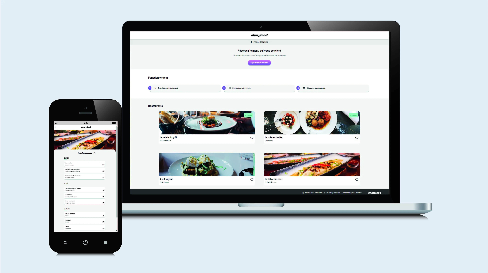

OhMyFood
Dans le cadre de ma formation, j'ai développé l'interface mobile-first d'un site web pour une start-up en pleine croissance. En utilisant Sass, j'ai structuré les styles pour une maintenance efficace. J'ai également intégré des animations CSS afin d'enrichir l'expérience utilisateur avec des interactions visuelles dynamiques. La gestion des versions via Git et GitHub m'a permis de suivre les évolutions du projet avec précision. Ce projet illustre ma capacité à créer des interfaces web réactives et esthétiques, en optimisant l'interaction utilisateur grâce à des animations bien pensées.
